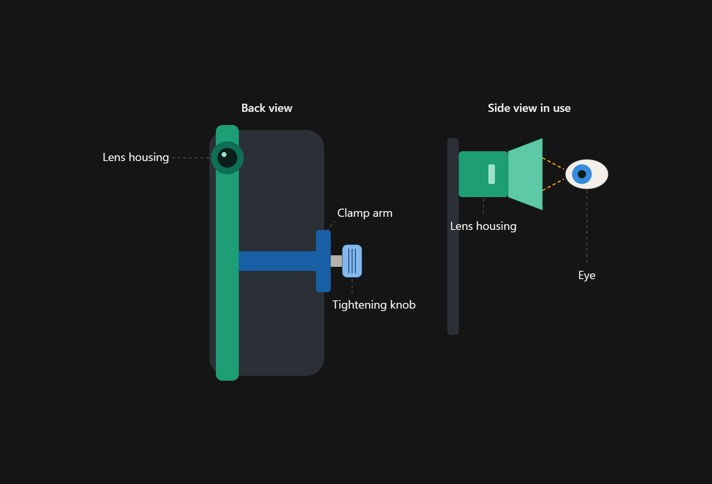
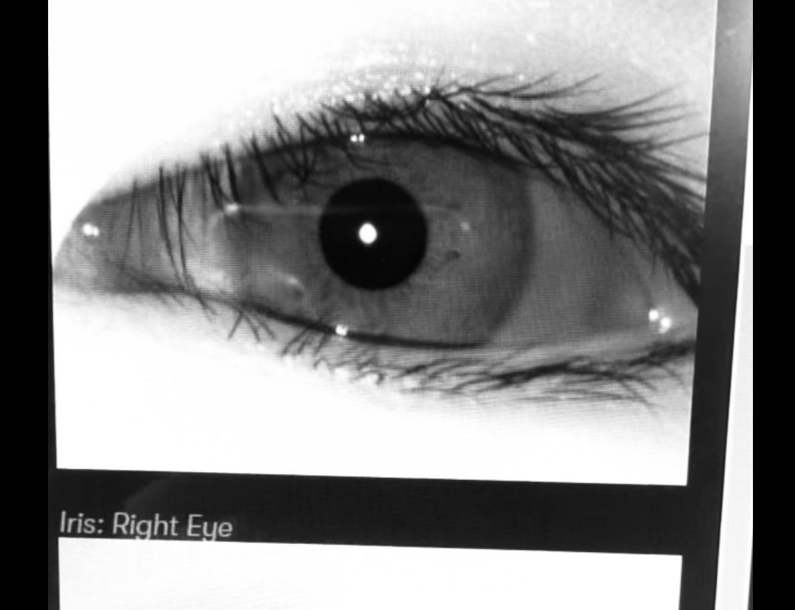

Mobile App · Product Design
Remote Eye Screening
Transforming a mobile device into an intuitive eye-screening tool through improved image quality and a guided capture experience.

Overview
The initial problem statement. Triaging of eye conditions are generally poorly conducted. As a result, the tertiary ophthalmology service is overburdened with non-urgent cases, while true ocular emergencies are still occasionally missed.
To tackle the initial problem statement, our stakeholders had developed a prototype of a portable eye screening tool: a 3D-printed attachment that turns any mobile phone into an eye screening device.
In the current process, the tool is attached to the phone and aligned with its camera, a photo of the elderly person's eye is taken, and the image is sent to an ophthalmologist for evaluation and any necessary follow-up.
Challenge
After developing the 3D-printed portable eye-screening tool, our stakeholders approached us to address two key challenges: capturing clear, usable eye images for assessment by an ophthalmologist, and simplifying the screening process, which currently requires two people to complete.
1. How might we help users capture clear, high-quality eye images on the first attempt using the 3D-printed eye screening tool paired with a phone?
2. How might we make the eye-screening process intuitive and easy to complete for both the person taking the photo and the person being screened?
Approach
Working closely with ophthalmologists, we first gathered domain expertise and clarified requirements to ensure the solution addressed real clinical needs. We then conducted user testing to validate assumptions, uncover usability challenges, and provide evidence to guide design decisions centred around both users and healthcare professionals.

Key insights
Caregivers are the primary users. User testing helped us identify caregivers as the primary users, responsible for operating the device and capturing patients' eye images. Patients aged 60 and above are the secondary users whose eye images are captured, with the app supporting up to four patient profiles.
Not all elderly patients have access to smartphones. More than half of our interviewees shared that their elderly parents or grandparents either lacked a smartphone or were not tech-savvy. To address this, made sure our mobile app could create and switch between up to four patient profiles.
Solution
We designed a mobile application to complement the 3D-printed portable eye-screening tool, simplifying image capture while ensuring sufficient image quality for assessment.

The key features are:
1. AI/ML-powered auto-capture: Automatically captures the eye image when sufficient image quality is detected, reducing guesswork and repeated attempts. This helps users obtain clearer, usable images for ophthalmologists to assess.
2. Guided onboarding: Provides an in-app guided tutorial on first use, with step-by-step instructions on how to operate the device and capture eye images. This helps users understand the process from the start, reducing the learning curve and making eye screening easier to complete.
Together, these features simplify the screening process, allowing users to focus on positioning the device and capturing the eye image while the app guides them through the steps and handles the capture automatically.

Outcome
The proof of concept demonstrated how a guided mobile experience could support clearer eye image capture and simplify the screening process. With further development and validation, the solution could be deployed in community screening programmes to extend access to eye screening.
Takeaways
Designing a mobile application to support eye screening at home was an eye-opening experience. Working closely with ophthalmologists and users throughout the design thinking process taught me the importance of designing around real user needs and behaviours.
For applications used infrequently, such as once every three months, it is important to minimise the need for users to relearn the experience. Providing alternative login methods, guided onboarding, and contextual prompts can help users navigate the application confidently, even after long periods of inactivity.
Note: Regular eye checkups are recommended every three months for this use case.
Next project